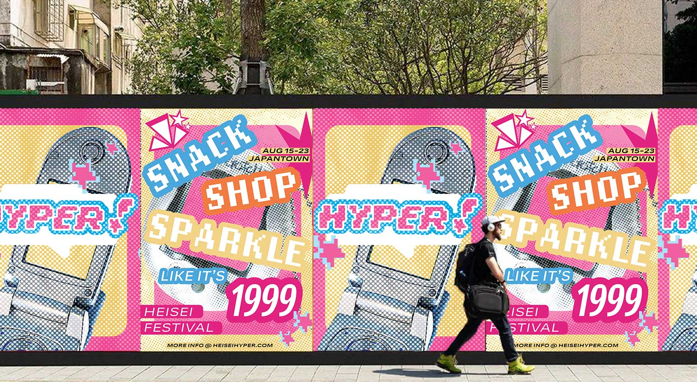
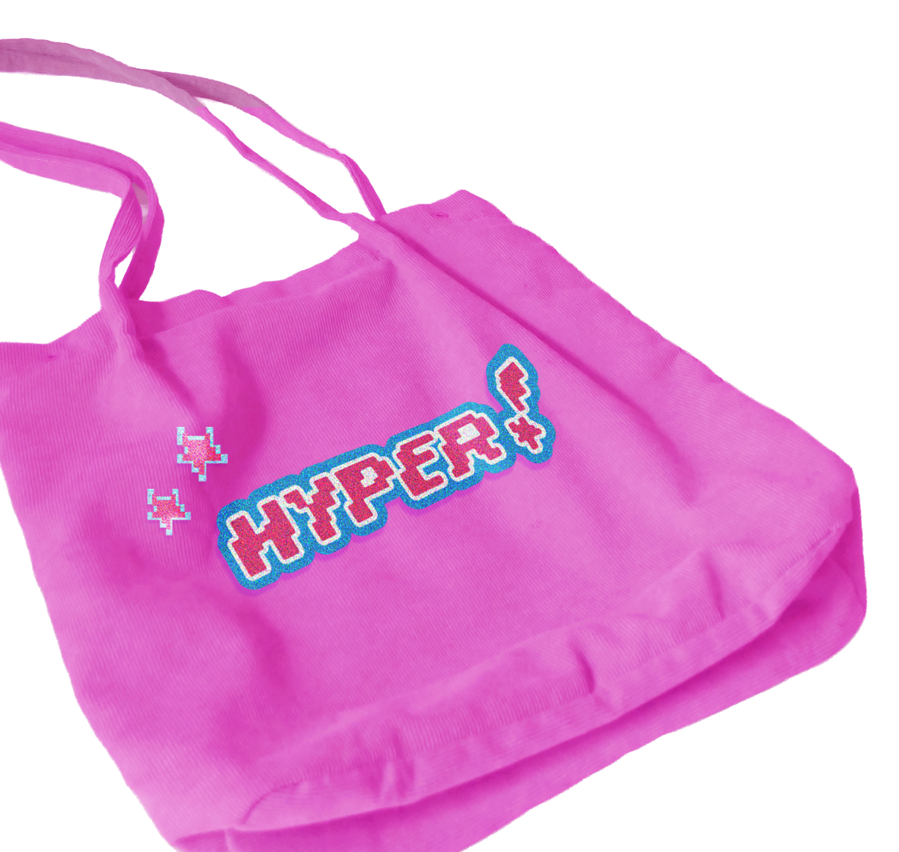
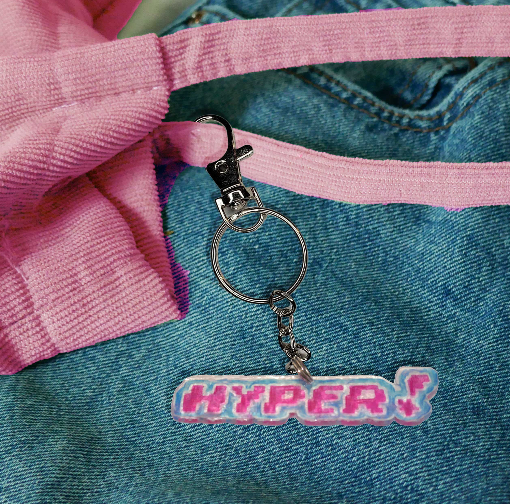
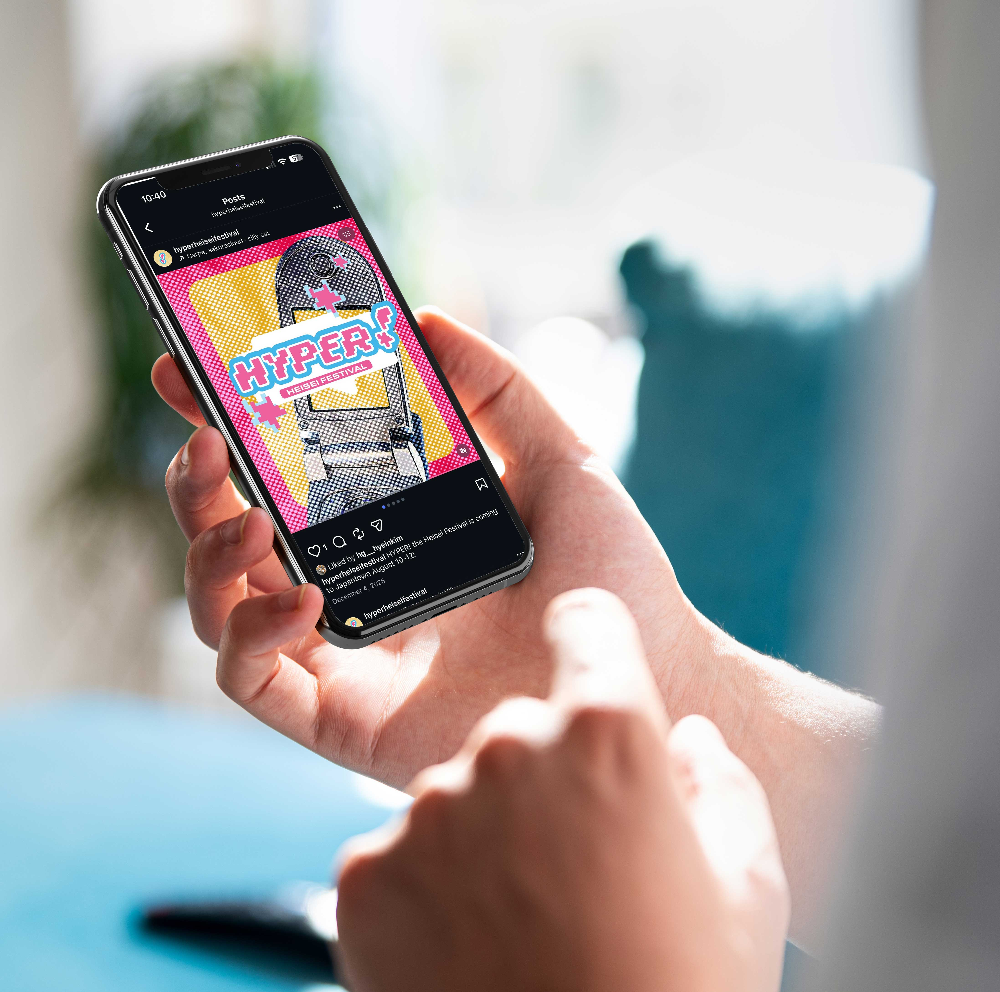
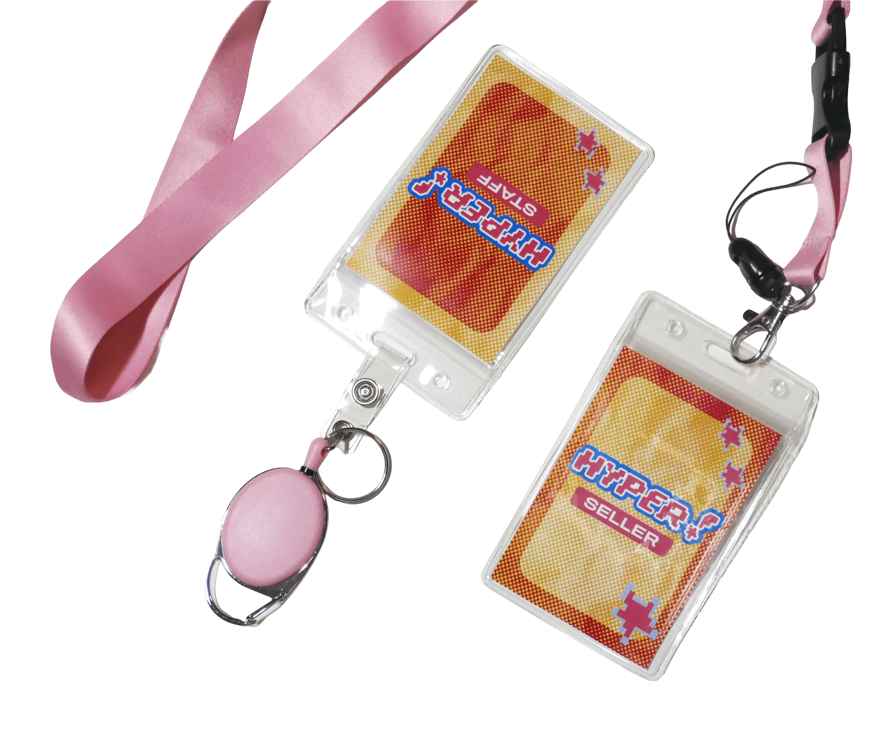
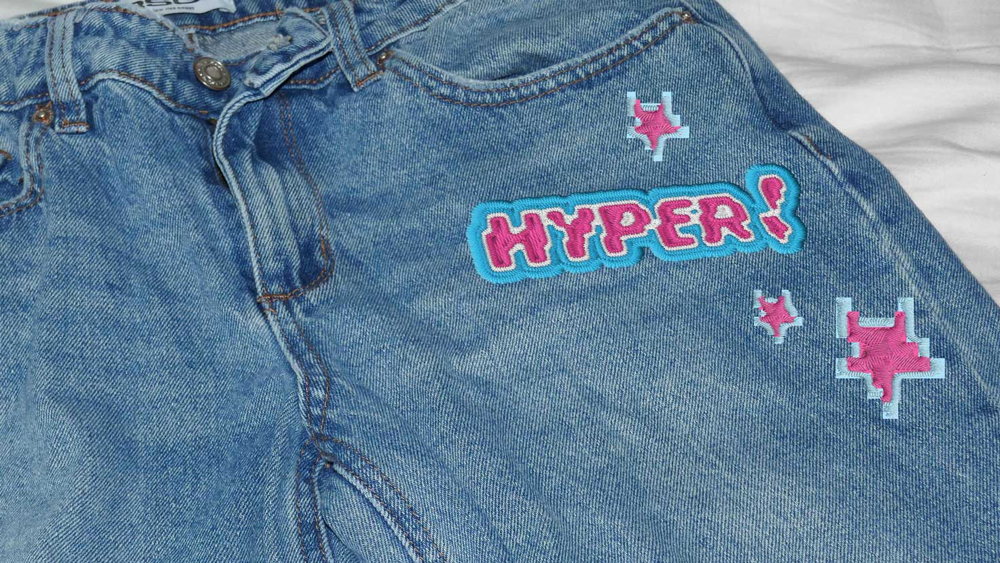

RETRO IS BACK! HYPER! The Heisei Festival
is a lively event that will transform San Francisco into a Heisei Retro Festival highlighting the quirky and fun aesthetics of early Heisei Era Japan. The Heisei era (1989-2019) was a time filled with hardships and struggle, however, rather than losing themselves in it, the youth embraced a form of resistance that brought a lot of excitement and joy to their lives through fashion, media, technology, and mindset. In our current world, with a lot of changes politically, economically, and socially, the tactility and nostalgia of the Heisei Era caught the attention of today’s youth, sparking the emergence of Heisei Retro.
HYPER! or 超(chō) – is a slang word that served as a prefix from the 90’s. Hyper-good or hyper-bad, the youth perceived their lives in the extreme, which reflected in their culture.
This event is about bridging the gap between generations and giving people a chance to experience what the Heisei era encapsulates. Encouraging joy and community as resistance, especially in our world today.
PROJECT INFO
Identity Design 2025
TOOLS
Illustrator, Photoshop, After Effects, Figma 2025






PROCESS
In this semester-long project, I explored a wide variety of applications and topics within the Heisei Era to develop the design of HYPER! The goal for the concept was to capture the essence of the Heisei era, with bright colors, old technology, and fun assets, while presenting it in a little bit of a more unique way. The pixelated font for the logo that I created to be italicized, represents moving forward and energy. The pixelation is also a nod to old technology pixels, but has rounded edges, making it softer and more modern. This set the tone for my approach to the entire event identity.